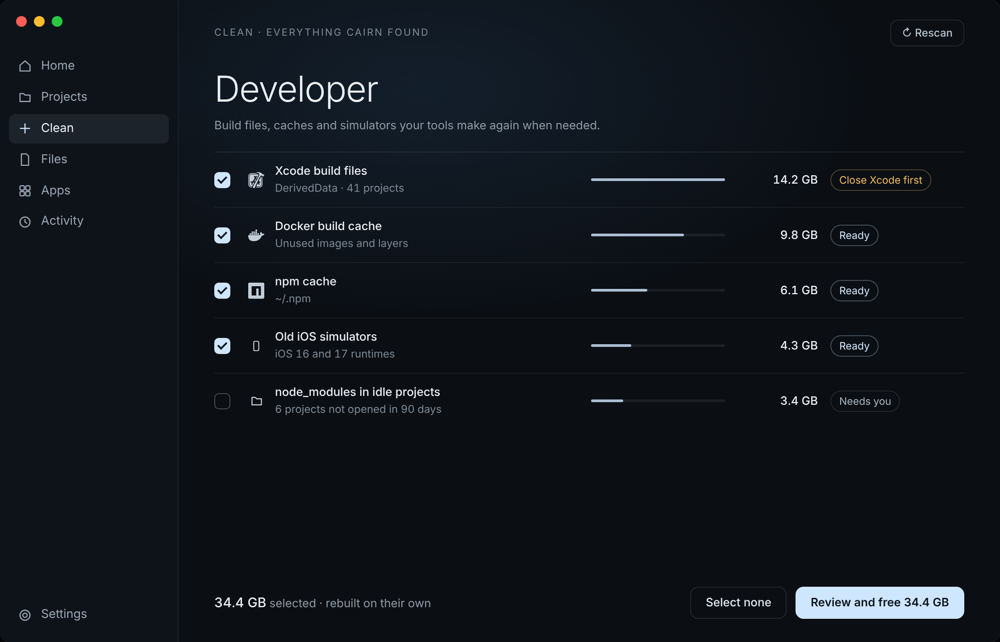
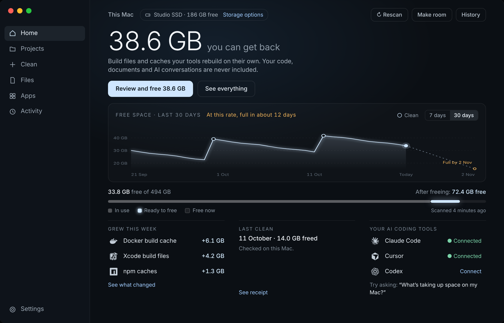
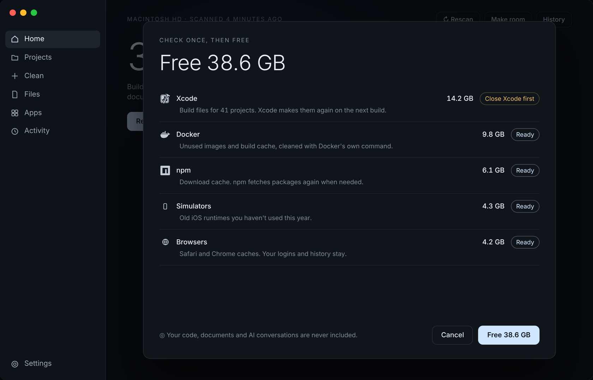
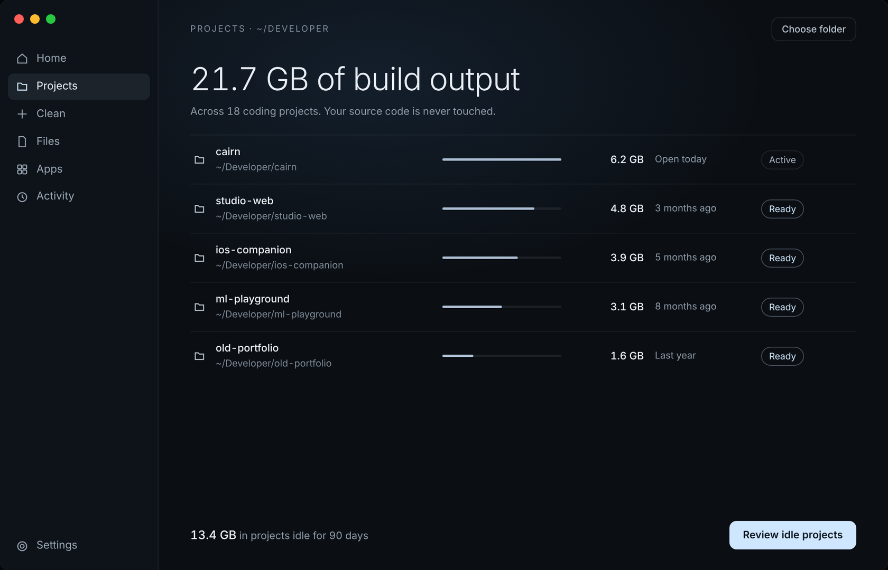
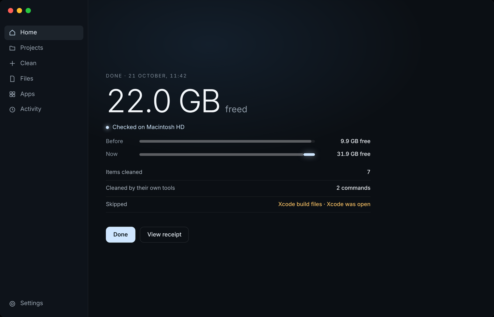

01 / Understand
See what’s taking up your space.
Build output, packages and local models. Understand what changed before deciding what goes.
Compare dated readings and compatible scans, with coverage clearly shown.
See Clean

A Mac cleaner for developers
Get back the space your build files and caches took. Your code and AI conversations are never touched.
Native to macOS. In development.
Works with your AI coding tools

Built around your stack.
Keep your momentum
Another dependency. Another simulator. Another local model. Your Mac fills up while you’re making things. Knowing what can go shouldn’t become the next project.
DerivedDataXcode build outputnode_modulesProject dependenciesPackage cachesDownloaded tool data.gitSource-control history.codex/sessionsYour coding conversationsCredentialsAccess and recovery dataHow it works
See where your space goes, understand what can go, and keep what makes your work yours.
01 / Understand
Build output, packages and local models. Understand what changed before deciding what goes.
Compare dated readings and compatible scans, with coverage clearly shown.
See Clean
02 / Review
Choose your target. Review exact paths, sizes and requirements before approving a change.
You decide what happens next. Nothing is selected for you.
See the review
03 / Protect
The code. The conversations. The context for your next build. Known working locations stay protected.
Source-control history, coding sessions and credentials. Uncertain rebuildability requires review.
See Projects
04 / Make room
Review what changed, check your available space and keep building with your work intact.
Every action is recorded, with the recovery options for each one.
See Activity
Inside Cairn
Start with available space and its recent history. Find your next step without searching through every folder.
See HomeInspect exact paths, sizes and requirements. Known working locations stay protected.
See ProjectsReview recorded actions and the recovery options available for each one.
See ActivityThe rest of your Mac
Start with the developer stack. Bring the same care to the files, apps and tools around it.
Review Xcode data, simulator support, and generated project folders with their requirements in view.
Inspect Node, Python, Rust, and other tool caches. Check what can be rebuilt before acting.
Find forgotten large files and review duplicate files or app data individually.
Review temporary data from the other tools you use, with saved work kept distinct.
Review model downloads and AI app caches while known conversation and session locations stay protected.
Verify eligible copies to a supported encrypted drive, with originals retained. Get optional low-space alerts.